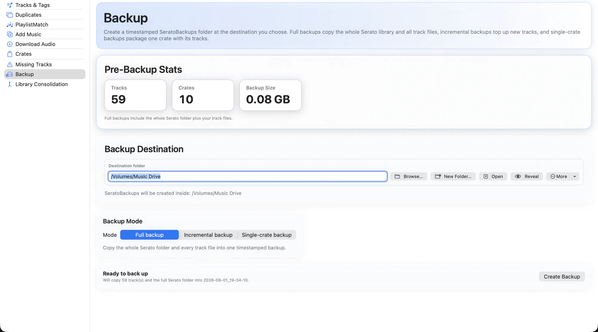

EZLibrary snapshots any Serato file it is about to write, automatically. The Backup tab is the deliberate version of that: a full, self-contained copy you can take before a big change, or on a schedule you keep yourself.
Backups land in a SeratoBackups folder, each in its own timestamped directory, as ordinary files you can browse in Finder.

What it does
- Three modes. Full for everything, incremental for what changed since the last one, single crate for one night's music.
- Estimate first. The size and file count are shown before the backup starts, so a full backup never surprises you.
- Genuinely incremental. Tracks already captured in the previous backup are skipped instead of re-copied.
- Tolerant of gaps. A single-crate backup no longer aborts because one referenced file has been moved or deleted — it skips it and carries on.
- Plain files. No proprietary archive. It is a folder of your library and your music, restorable by hand if you ever need to.
How to use it
-
Choose a mode
Full for a real safety net; single crate when you just want tonight's set safe.
-
Check the estimate
Confirm the size and count against the free space where the backup is going.
-
Run it
The backup is written to a timestamped folder under
SeratoBackups.
Run a full backup before your first duplicate cleanup or consolidation. Those are the two operations that delete or move real audio files.
Related
Find Duplicates
Catch the same song saved five times, even when every copy is named differently.
Library Consolidation
Pull music scattered across drives and folders into one place, without breaking a single crate.
Missing Tracks
Find every file Serato has lost track of, and relink it to where it actually lives.
Try it on your own library
Free and open source. Takes a backup before it touches anything.